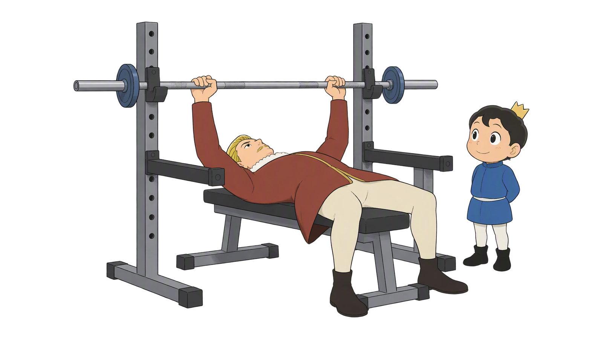
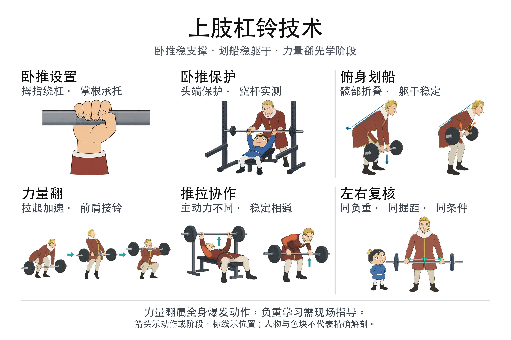
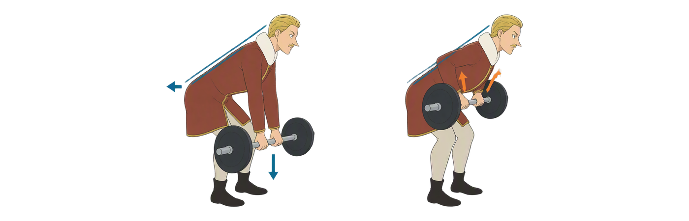
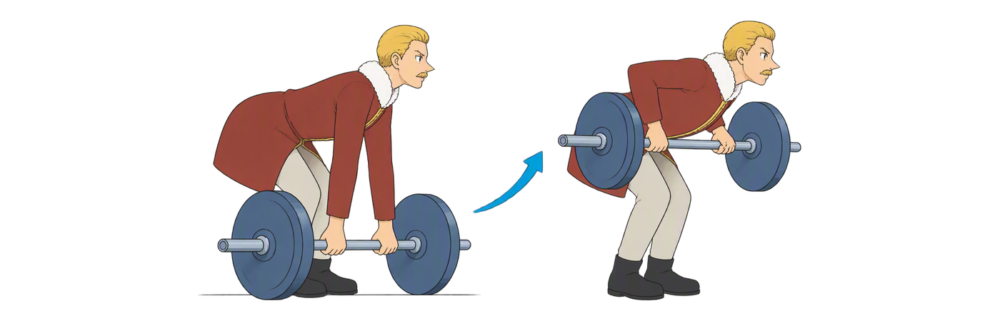
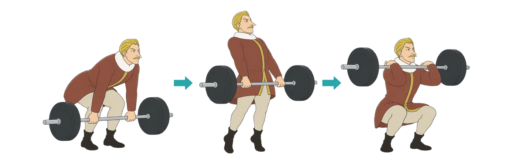
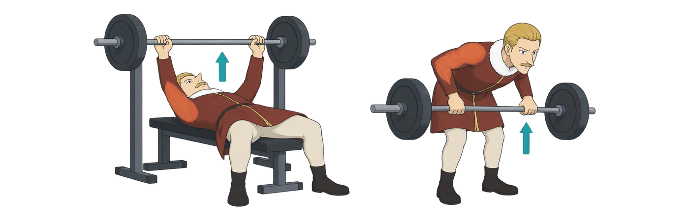
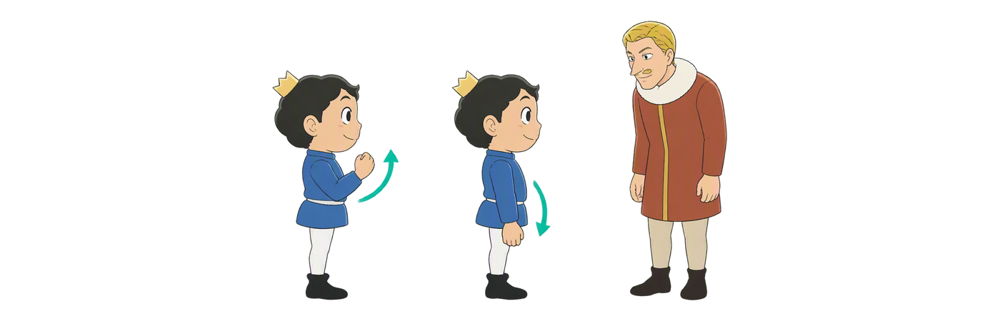

Day 42
上肢杠铃技术 先稳住，再发力
卧推 × 划船 × 力量翻 把支撑、轨迹和保护连起来
卧推保护推拉协作左右复核

卧推 × 划船 × 力量翻 把支撑、轨迹和保护连起来
先看动作和器械关系，再逐页学习。力量翻只作阶段入门，负重练习需现场指导。

闭合握杠、上背稳定、臀部贴凳、脚掌着地。拱度和握距以可控制、舒适为先。
图示推起顶部：杠在肩部上方附近稳定。下放至适合自己的胸部触点，再平顺推回；不强求唯一轨迹。

保护者站在举者头端，须受过训练并具备控制能力；安全杆也要按本人姿势实测。
先维持俯身，再后移上臂、屈肘拉起。蓝线示躯干方向，箭头示髋后移、下放与拉起。

每次从地面静止起拉，躯干通常接近水平。它与传统悬空划船的区别不只是速度。

一次拉 → 过渡后二次拉 → 钻杠接铃。它是全身爆发动作，不是手臂弯举。

卧推偏水平推，划船偏水平拉。橙区仅示意参与区域，不是精确解剖图；稳定需要全身协作。

杠端倾斜只是现象。图中蓝绿色标线比较握点到中心的距离；先查设置、视角与疲劳，再复核。
用动作方向解释肌肉配对，再给出一个可执行的稳定提示；不只背肌肉名称。
